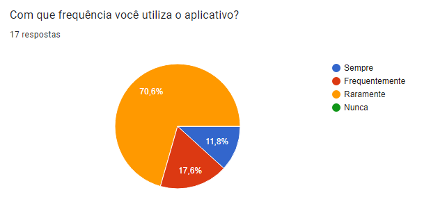

Questionário
1. Definição
Questionários são utilizados principalmente como ferramentas simples, que podem conter perguntas do tipo abertas (dissertativas) e/ou fechadas (objetivas) durante a fase inicial da elicitação de requisitos.
Por meio dos dados obtidos das respostas dos questionários, é possível identificar as principais características que servirão de base para a elicitação dos requisitos.
2. Metodologia
Para analisarmos os dados obtidos de forma precisa e coerente sobre a realidade dos usuários do aplicativo, iniciamos perguntando se o usuário já utilizou a plataforma alguma vez. Caso a resposta seja negativa, o questionário é prontamente finalizado, mas no caso de resposta positiva, o participante é encaminhado para uma sequência de perguntas relativas ao uso do aplicativo e sua satisfação com o mesmo.
As perguntas buscam averiguar o nível de satisfação, experiência de uso do aplicativo e se o usuário conseguiu ter suas demandas atendidas, com um enfoque atribuído às quatro principais seções (áreas) apresentadas pela aplicação, que são: Habilitação, Veículos, Infrações e Agendamentos.
3. Perguntas e os dados obtidos
Foram obtidas 33 respostas do questionário, que esteve disponível durante o período de uma semana e foi divulgado entre pessoas acima dos 18 anos.
Pergunta 1

Figura 1: Pergunta 1
O primeiro passo no nosso questionário foi identificar se o participante já utilizou ou não o aplicativo.
Conforme demonstrado na Figura 1, 51,5% dos participantes (17) utilizaram ao menos uma vez a plataforma, enquanto 48.5% responderam que nunca usaram.
Pergunta 2

Figura 2: Pergunta 2
Dentre as pessoas que já utilizaram a plataforma, 70.6% consideraram que usam o aplicativo poucas vezes, 17.6% que usam com frequência e 11,8% que utilizam sempre, como pode ser observado na Figura 2.
Pergunta 3

Figura 3: Pergunta 3
Por meio da pergunta mostrada na Figura 3, verifica-se quais áreas do aplicativo o usuário utilizou, podendo marcar uma ou várias alternativas.
Pergunta 4

Figura 4: Pergunta 4
Através da pergunta apresentada na Figura 4, deseja-se saber o nível de facilidade de uso e a utilidade da seção de "Habilitação".
Pergunta 5

Figura 5: Pergunta 5
Na pergunta de número 5, deseja-se saber o nível de facilidade de uso e a utilidade da seção de "Veículos", como mostrado na Figura 5 acima.
Pergunta 6

Figura 6: Pergunta 6
Na pergunta 6 da Figura 6, deseja-se saber o nível de facilidade de uso e a utilidade da seção de "Infrações".
Pergunta 7

Figura 7: Pergunta 7
A sétima pergunta aborda a seção remanescente, de "Agendamentos", e segue a mesma ideia das anteriores (como observado na Figura 7) e questiona à respeito do nível de facilidade de uso e a utilidade da seção.
Pergunta 8

Figura 8: Pergunta 8
Da oitava pergunta em diante, os quesitonamentos são voltados para a satisfação do usuário com o aplicativo. A Figura 8 apresenta o resultado em que é possível identificar que 82.4% dos usuários afirmaram já ter tido alguma dificuldade com a plataforma.
Pergunta 9

Figura 9: Pergunta 9
Nessa pergunta é possível identificar que 76,4% dos usuários não conseguem resolver totalmente suas demandas, com os dados mostrados na Figura 9.
Pergunta 10

Figura 10: Pergunta 10
Por fim, o ciclo de perguntas se encerra com um questionamento final sobre como o usuário avalia a sua prórpia experiência com o aplicativo, podendo classificá-la entre quatro categorias diferentes, como visto na Figura 10.
Apesar de os dados da Pergunta 9 indicarem que a maioria dos usuários não conseguiu ter todas as suas demandas atendidas utilizando o aplicativo, a Pergunta 10 acabou revelando que a grande maioria dos participantes avaliou sua experiência geral como regular ou superior.
4. Requisitos elicitados
Com o fim do processo de análise das respostas dos questionários, na Tabela 1 abaixo é possível verificar quais foram os requisitos levantados.
| Número | Requisito |
|---|---|
| 1 | Deverá ser possível acessar a habilitação |
| 2 | Deverá ser possível consultar o veículo |
| 3 | Deverá ser possível consultar infrações |
| 4 | Deverá ser possível agendar atendimentos |
| 5 | Aplicativo deverá funcionar 24/7 |
Tabela 1: Requisitos elicitados
Referências
Técnicas de Elicitação de Requisitos. Disponível em: https://retraining.inf.ufsc.br/guia/app/classificacoes/tecnicas-de-elicitacao-de-requisitos/entidades. Acesso em: 11 de jul. de 2022.
Histórico de Versão
| Versão | Data | Descrição | Autor | Revisor |
|---|---|---|---|---|
| 0.1 | 05/07/2022 | Criação da página | Arthur | Paulo |
| 0.2 | 12/07/2022 | Correções de português e layout, adição de legendas | Paulo | Arthur |
| 0.2.1 | 13/07/2022 | Revisão geral do texto e correções ortográficas | Matheus | Paulo |